log10(10)[1] 1567 / 4[1] 141.75sin(1)[1] 0.8414711 == 1[1] TRUE1 != 2 [1] TRUE1 >= -9[1] TRUE5 < 3[1] FALSEEste capítulo introduce R como lenguaje de programación enfocado en el análisis de datos. Aprenderemos los tipos de objetos más comunes, cómo crear funciones simples, estructuras de control básicas y cómo importar y explorar conjuntos de datos reales.
R es un lenguaje de código abierto utilizado ampliamente en estadística, ciencia de datos y análisis científico. En paleontología y geología, permite analizar y visualizar datos de manera reproducible.
De mayor a menor precedencia:
Paréntesis: (, )
Exponente: ^ o **
División: /
Multiplicación: *
Suma: +
Resta -
R permite hacer todo tipo de operaciones y comparaciones a los objetos que usemos
log10(10)[1] 1567 / 4[1] 141.75sin(1)[1] 0.8414711 == 1[1] TRUE1 != 2 [1] TRUE1 >= -9[1] TRUE5 < 3[1] FALSE| Precedencia | Operador | Descripción | Ejemplo |
|---|---|---|---|
| 0 (siempre va primero) | ( ) |
Paréntesis | 2 * (3 + 4) → 14 |
| 1 (alta) | ^ o ** |
Potencia | 2 ^ 3 → 8 |
| 2 | - |
Negación | -5 → -5 |
| 3 | * |
Multiplicación | 4 * 2 → 8 |
| 3 | / |
División real | 8 / 2 → 4 |
| 3 | %% |
Módulo (resto) | 10 %% 3 → 1 |
| 3 | %/% |
División entera | 10 %/% 3 → 3 |
| 4 (baja) | + |
Suma | 3 + 5 → 8 |
| 4 | - |
Resta | 7 - 2 → 5 |
| Operador | Nombre | Descripción | Ejemplo |
|---|---|---|---|
< |
Menor que | Compara si un valor es menor | 5 < 10 → TRUE |
<= |
Menor o igual | 5 <= 5 → TRUE |
|
> |
Mayor que | 10 > 3 → TRUE |
|
>= |
Mayor o igual | 4 >= 4 → TRUE |
|
== |
Igual a | Comparación de igualdad | 3 == 3 → TRUE |
!= |
Distinto de | 5 != 4 → TRUE |
|
& |
Y lógico (elemento a elemento) | Ambos deben ser verdaderos | TRUE & FALSE → FALSE |
| |
O lógico (elemento a elemento) | Uno de los dos debe ser verdadero | c(TRUE, FALSE, FALSE)| c(TRUE, TRUE, FALSE) → TRUE TRUE FALSE |
&& |
Y lógico (primer elemento) | Solo compara el primer valor | c(TRUE, FALSE) && c(TRUE, TRUE) → TRUE |
|| |
O lógico (primer elemento) | Solo compara el primer valor | c(TRUE, FALSE, TRUE) || c(FALSE, TRUE, FALSE)→ TRUE |
%in% |
Se encuentra en | Evalua si el valor está presente en la matriz | "a" %in% c ("b", "b", "a", "x","b","x") → TRUE |
! |
Negación lógica | Invierte el valor lógico | !TRUE → FALSE |
# Asignación de variables
edad <- 120
formacion <- "Rosa Blanca"
es_marine <- TRUE
# Tipos de datos
class(edad) # numeric
class(formacion) # character
class(es_marine) # logical# Crear vectores
litologias <- c("micrita", "lutita", "arenita", "micrita")
unique(litologias)[1] "micrita" "lutita" "arenita"# Convertir a factor
litologias <- factor(litologias)
levels(litologias)[1] "arenita" "lutita" "micrita"# Operar sobre vectores
x <- 1:5
x[1] 1 2 3 4 52^x[1] 2 4 8 16 32#Las listas son como vectores pero permiten varios tipos de datos
lista <- list(1, "a", TRUE, 1+4i)
lista
lista_2 <- list(title = "Numbers", numbers = 1:10, data = TRUE )
lista_2#Las matrices son listas bidimensionales
matrix_example <- matrix(1:18, ncol=6, nrow=3)
matrix_example [,1] [,2] [,3] [,4] [,5] [,6]
[1,] 1 4 7 10 13 16
[2,] 2 5 8 11 14 17
[3,] 3 6 9 12 15 18dim(matrix_example)[1] 3 6#nrow
#ncolLos dataframes son los objetos más usados en R
#Un data frame se es como una matriz pero tiene caracteristicas especiales
ratones <- data.frame(color = c("gris", "negro", "blanco"),
peso = c(0.4, 0.2, 0.6),
tiene_cria = c(1, 0, 1))
head(ratones) color peso tiene_cria
1 gris 0.4 1
2 negro 0.2 0
3 blanco 0.6 1#Cada columna de un df tiene puede tener una clase diferente
#las columnas se pueden indexar por su nombre
class(ratones$color)[1] "character"x <- 100
# Condicional
if (x >= 50) {
print("x es ayor o igual que 50")
} else if (x < 50) {
print("x es mayor a 50, pero menor a 100")
} else {
print("x es menor a 50")
}[1] "x es ayor o igual que 50"# Bucle for
for (i in 1:3) {
print(i)
}[1] 1
[1] 2
[1] 3# Se pueden correr bucles dentro de bucles
for(i in 1:5){
for(j in c('a', 'b', 'c')){
print(paste(i,j))
}
}[1] "1 a"
[1] "1 b"
[1] "1 c"
[1] "2 a"
[1] "2 b"
[1] "2 c"
[1] "3 a"
[1] "3 b"
[1] "3 c"
[1] "4 a"
[1] "4 b"
[1] "4 c"
[1] "5 a"
[1] "5 b"
[1] "5 c"Escribe un codigo que con un vector x 1:10 evalue cada número e imprima si es par o impar
x <- 1:10
for(i in x){
if (i%%2 == 0){
print(paste(i,"es par"))
} else {
print(paste(i,"es impar"))
}
}[1] "1 es impar"
[1] "2 es par"
[1] "3 es impar"
[1] "4 es par"
[1] "5 es impar"
[1] "6 es par"
[1] "7 es impar"
[1] "8 es par"
[1] "9 es impar"
[1] "10 es par"Todas las funciones en R ya sean de base o de algún paquete tiene una documentación que nos explica su funcionamiento, sus argumentos y su salida.
?función
help(función)
??función cuando no se conoce bien el nombre de la función
# Función simple
doblar <- function(x) {
return(x * 2)
}
doblar(5)[1] 10#Para crear un error, podemos usar la función stop() y que el codigo pare
#si las condiciones no se están cumpliendo
#R provee la función stopifnot() para no tener que crear un condicional ifEscribe una función que convierta de grados kelvin a celsius y pare si los datos ingresados no son numericos
kelvin_a_celsius <- function(temp) {
stopifnot(is.numeric(temp))
kelvin <- temp - 273.15
rm(temp)
return(kelvin)
}
kelvin_a_celsius(300)[1] 26.85Un paquete es una colección de funciones, datos y documentación que amplía las capacidades básicas de R. Existen miles de paquetes creados por la comunidad científica para tareas específicas como visualización, análisis geoespacial, manipulación de datos, entre otros.
Algunos de los paquetes que vamos a usar:
Tidyverse conjunto de paquetes para manipular y visualizar datos de forma organizada.
ggplot2 para gráficos y visualizaciones.dplyr para manipulación de datos.SDAR permite crear columnas estratigraficas facilmente.
paleoverse conjunto de paquetes orientados a paleontología.
macrostrat permite visualizar y cargar para datos estratigráficos.sepkosky permite visualizar y acceder a datos de géneros de fosiles marinos.En R hay varias formas de importar datos, se pueden leer los archivos usando las funciones base de R, que permiten cargar diversos formatos, se pueden usar las funciones del paquete readr o se pueden importar por medio de un paquete que contiene un dataset.
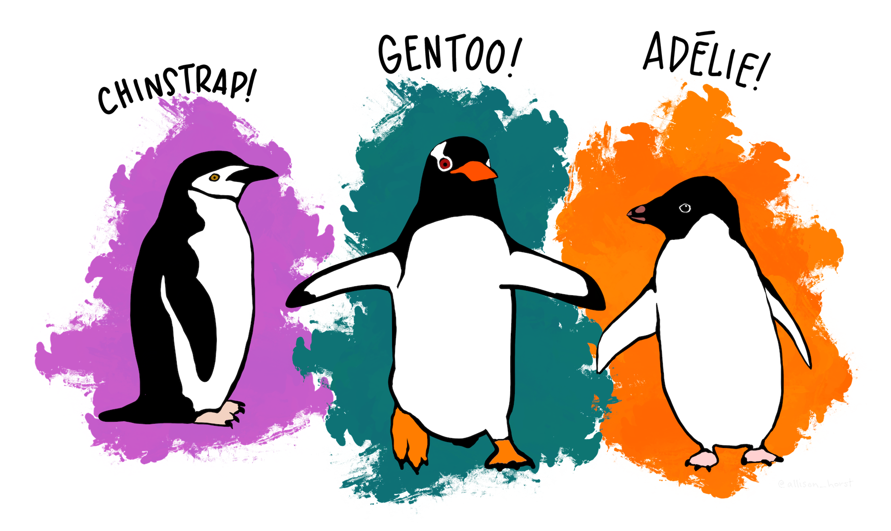
#install.packages("palmerpenguins")
library(tidyverse)
library(palmerpenguins)
# Visualizar
head(penguins)# A tibble: 6 × 8
species island bill_length_mm bill_depth_mm flipper_length_mm body_mass_g
<fct> <fct> <dbl> <dbl> <int> <int>
1 Adelie Torgersen 39.1 18.7 181 3750
2 Adelie Torgersen 39.5 17.4 186 3800
3 Adelie Torgersen 40.3 18 195 3250
4 Adelie Torgersen NA NA NA NA
5 Adelie Torgersen 36.7 19.3 193 3450
6 Adelie Torgersen 39.3 20.6 190 3650
# ℹ 2 more variables: sex <fct>, year <int>str(penguins)tibble [344 × 8] (S3: tbl_df/tbl/data.frame)
$ species : Factor w/ 3 levels "Adelie","Chinstrap",..: 1 1 1 1 1 1 1 1 1 1 ...
$ island : Factor w/ 3 levels "Biscoe","Dream",..: 3 3 3 3 3 3 3 3 3 3 ...
$ bill_length_mm : num [1:344] 39.1 39.5 40.3 NA 36.7 39.3 38.9 39.2 34.1 42 ...
$ bill_depth_mm : num [1:344] 18.7 17.4 18 NA 19.3 20.6 17.8 19.6 18.1 20.2 ...
$ flipper_length_mm: int [1:344] 181 186 195 NA 193 190 181 195 193 190 ...
$ body_mass_g : int [1:344] 3750 3800 3250 NA 3450 3650 3625 4675 3475 4250 ...
$ sex : Factor w/ 2 levels "female","male": 2 1 1 NA 1 2 1 2 NA NA ...
$ year : int [1:344] 2007 2007 2007 2007 2007 2007 2007 2007 2007 2007 ...summary(penguins) species island bill_length_mm bill_depth_mm
Adelie :152 Biscoe :168 Min. :32.10 Min. :13.10
Chinstrap: 68 Dream :124 1st Qu.:39.23 1st Qu.:15.60
Gentoo :124 Torgersen: 52 Median :44.45 Median :17.30
Mean :43.92 Mean :17.15
3rd Qu.:48.50 3rd Qu.:18.70
Max. :59.60 Max. :21.50
NA's :2 NA's :2
flipper_length_mm body_mass_g sex year
Min. :172.0 Min. :2700 female:165 Min. :2007
1st Qu.:190.0 1st Qu.:3550 male :168 1st Qu.:2007
Median :197.0 Median :4050 NA's : 11 Median :2008
Mean :200.9 Mean :4202 Mean :2008
3rd Qu.:213.0 3rd Qu.:4750 3rd Qu.:2009
Max. :231.0 Max. :6300 Max. :2009
NA's :2 NA's :2 #glimpse(penguins)
#Para tener una mejor idea de los datos seleccionamos 10 al azar
penguins[sample(nrow(penguins), 10), ]# A tibble: 10 × 8
species island bill_length_mm bill_depth_mm flipper_length_mm body_mass_g
<fct> <fct> <dbl> <dbl> <int> <int>
1 Chinstrap Dream 50.9 17.9 196 3675
2 Gentoo Biscoe 45.8 14.2 219 4700
3 Adelie Dream 44.1 19.7 196 4400
4 Adelie Dream 36.3 19.5 190 3800
5 Chinstrap Dream 48.1 16.4 199 3325
6 Gentoo Biscoe 46.4 15 216 4700
7 Adelie Biscoe 41.3 21.1 195 4400
8 Adelie Dream 39 18.7 185 3650
9 Chinstrap Dream 52 18.1 201 4050
10 Adelie Dream 39.6 18.8 190 4600
# ℹ 2 more variables: sex <fct>, year <int>unique(penguins$island)[1] Torgersen Biscoe Dream
Levels: Biscoe Dream Torgersen# Extraer solo ciertas filas y columnas para crear subsets
penguins[,-c(3:5)]# A tibble: 344 × 5
species island body_mass_g sex year
<fct> <fct> <int> <fct> <int>
1 Adelie Torgersen 3750 male 2007
2 Adelie Torgersen 3800 female 2007
3 Adelie Torgersen 3250 female 2007
4 Adelie Torgersen NA <NA> 2007
5 Adelie Torgersen 3450 female 2007
6 Adelie Torgersen 3650 male 2007
7 Adelie Torgersen 3625 female 2007
8 Adelie Torgersen 4675 male 2007
9 Adelie Torgersen 3475 <NA> 2007
10 Adelie Torgersen 4250 <NA> 2007
# ℹ 334 more rows# la función select pertenece a tidyverse y permite selccionar solo lo descrito
# el operador %>% se llama pipe y nos deja pasar un obejto por una o más funciones
penguins %>% select(bill_length_mm)# A tibble: 344 × 1
bill_length_mm
<dbl>
1 39.1
2 39.5
3 40.3
4 NA
5 36.7
6 39.3
7 38.9
8 39.2
9 34.1
10 42
# ℹ 334 more rowsCrea un data frame llamado penguins_2009 que sea el subset de penguins, que solo tenga los datos del año 2009, que no tenga las medidas de tamaño y sin los valores NA. Usa la función na.omit( )
penguins_2009 <- na.omit(penguins[penguins$year == 2009, -c(3:5)])
penguins_2009# A tibble: 117 × 5
species island body_mass_g sex year
<fct> <fct> <int> <fct> <int>
1 Adelie Biscoe 3725 female 2009
2 Adelie Biscoe 4725 male 2009
3 Adelie Biscoe 3075 female 2009
4 Adelie Biscoe 4250 male 2009
5 Adelie Biscoe 2925 female 2009
6 Adelie Biscoe 3550 male 2009
7 Adelie Biscoe 3750 female 2009
8 Adelie Biscoe 3900 male 2009
9 Adelie Biscoe 3175 female 2009
10 Adelie Biscoe 4775 male 2009
# ℹ 107 more rowsR permite calcular muy facilmente los valores importantes de Estadística descriptiva para un dataset, hay algunos paquetes que hacen esto incluso más sencillo.
#Esta libreria tiene funciones muy utiles para estadística descriptiva
#install.packages("psych")
library(psych)mass_2009 <- penguins_2009$body_mass_g
#Calculamos el promedio y la desviación estandar de los datos
mean(mass_2009)[1] 4200.214sd(mass_2009)[1] 826.2301summary(mass_2009) Min. 1st Qu. Median Mean 3rd Qu. Max.
2900 3500 4000 4200 4850 6000 #La función describe del paquete psych nos da una mejor visión de los datos
describe(mass_2009) vars n mean sd median trimmed mad min max range skew kurtosis
X1 1 117 4200.21 826.23 4000 4160.26 926.62 2900 6000 3100 0.42 -1.01
se
X1 76.39#plot(penguins_2009$body_mass_g)
hist(mass_2009)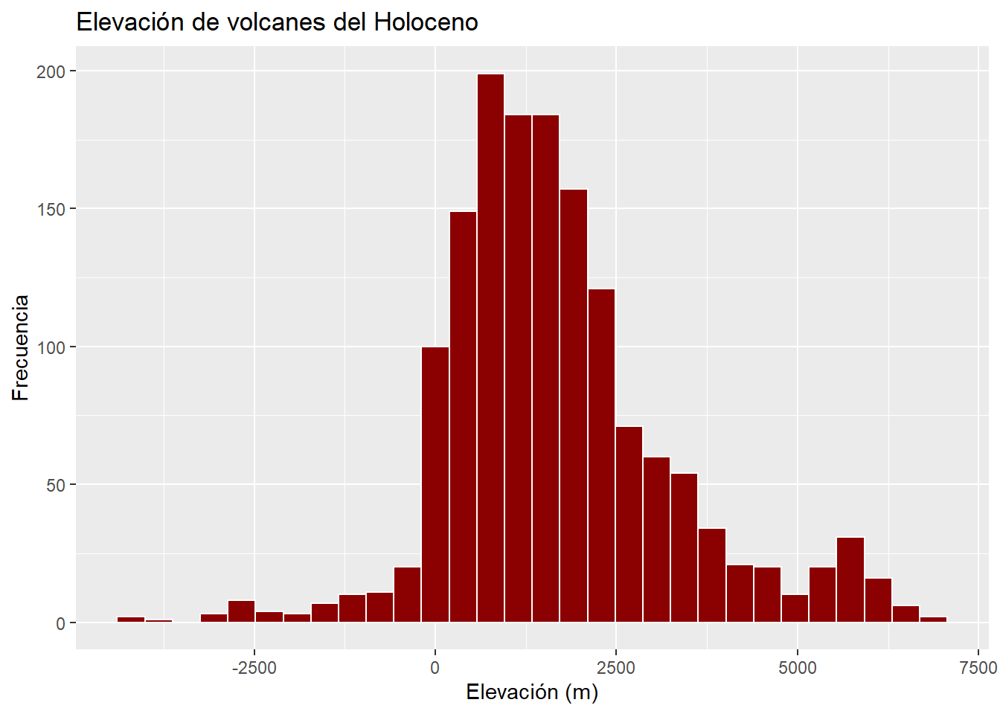
#La función decribeBy nos permite ver los valores por grupo
#cada grupo es una especie ya que son diferentes poblaciones
describeBy( x=penguins_2009$body_mass_g, group=penguins_2009$species)
Descriptive statistics by group
group: Adelie
vars n mean sd median trimmed mad min max range skew kurtosis
X1 1 52 3664.9 475.25 3600 3637.5 463.31 2900 4775 1875 0.44 -0.58
se
X1 65.91
------------------------------------------------------------
group: Chinstrap
vars n mean sd median trimmed mad min max range skew kurtosis se
X1 1 24 3725 330.1 3675 3707.5 407.71 3250 4450 1200 0.35 -0.84 67.38
------------------------------------------------------------
group: Gentoo
vars n mean sd median trimmed mad min max range skew kurtosis
X1 1 41 5157.32 426.73 5200 5143.18 518.91 4375 6000 1625 0.15 -1.17
se
X1 66.64# Tidyverse nos permite agrupar y ordenar los datos como deseemos
mass_by_island_species <- penguins_2009 %>%
group_by(island,species) %>%
summarise(mean_mass=mean(body_mass_g),
sd_mass=sd(body_mass_g))`summarise()` has grouped output by 'island'. You can override using the
`.groups` argument.mass_by_island_species# A tibble: 5 × 4
# Groups: island [3]
island species mean_mass sd_mass
<fct> <fct> <dbl> <dbl>
1 Biscoe Adelie 3858. 579.
2 Biscoe Gentoo 5157. 427.
3 Dream Adelie 3651. 398.
4 Dream Chinstrap 3725 330.
5 Torgersen Adelie 3489. 398.#tambien existe la función mutate que nos permite crear nuevas variables
mass_2009_kg <- penguins_2009 %>%
mutate(body_mass_kg=body_mass_g/1000)
mass_2009_kg# A tibble: 117 × 6
species island body_mass_g sex year body_mass_kg
<fct> <fct> <int> <fct> <int> <dbl>
1 Adelie Biscoe 3725 female 2009 3.72
2 Adelie Biscoe 4725 male 2009 4.72
3 Adelie Biscoe 3075 female 2009 3.08
4 Adelie Biscoe 4250 male 2009 4.25
5 Adelie Biscoe 2925 female 2009 2.92
6 Adelie Biscoe 3550 male 2009 3.55
7 Adelie Biscoe 3750 female 2009 3.75
8 Adelie Biscoe 3900 male 2009 3.9
9 Adelie Biscoe 3175 female 2009 3.18
10 Adelie Biscoe 4775 male 2009 4.78
# ℹ 107 more rowsPara graficar usaremos la libreria ggplot, si bien la función base plot nos permite crear graficas ggplot añade muchas opciones y mejor calidad, también se puede usar la libreria ggpubr que facilita el uso de ggplot para algunas graficas (usaremos unos ejemplos de ggpubr en donde mejor se desempeña), pero nos vamos a centrar en ggplot.
#ggplot viene incluida en Tidyverse y permite crear graficos de gran calidad
#install.packages("ggplot2")
library(ggplot2)
#ggpubr nos permite crear graficas usando ggplot pero con mayor facilidad
#install.packages("ggpubr")
library(ggpubr)ggpubr facilita mucho el uso y creación de algunas graficas como:
Histogramas
Diagramas de caja
Diagramas de dispersión
#Se invoca la función con el dataset
ggbarplot(penguins,
#Se dice que datos van a ocupar cada eje
x = "species",
y = "bill_length_mm",
#Se añade la desviación estandar
add = c("mean_sd"),
#Que determina el relleno de los datos
fill = "species",
#Se añaden las etiquetas
label = TRUE,
#Cantidad de digitos en las etiquetas
lab.nb.digits = 2,
#Color y ajuste vertical de las etiquetas
lab.vjust = -2.2,
lab.col = "red",
#Titulo, subtitulo y valores de las etiquetas de los ejes
title = "Longitud media del pico de los pingüinos",
subtitle = "La barra de error muestran la desviación estandar",
xlab = "Especies",
ylab = "Largo del pico (mm)",
#Paleta de colores y limite de los ejes
ylim = c(0,60),
palette = "npg")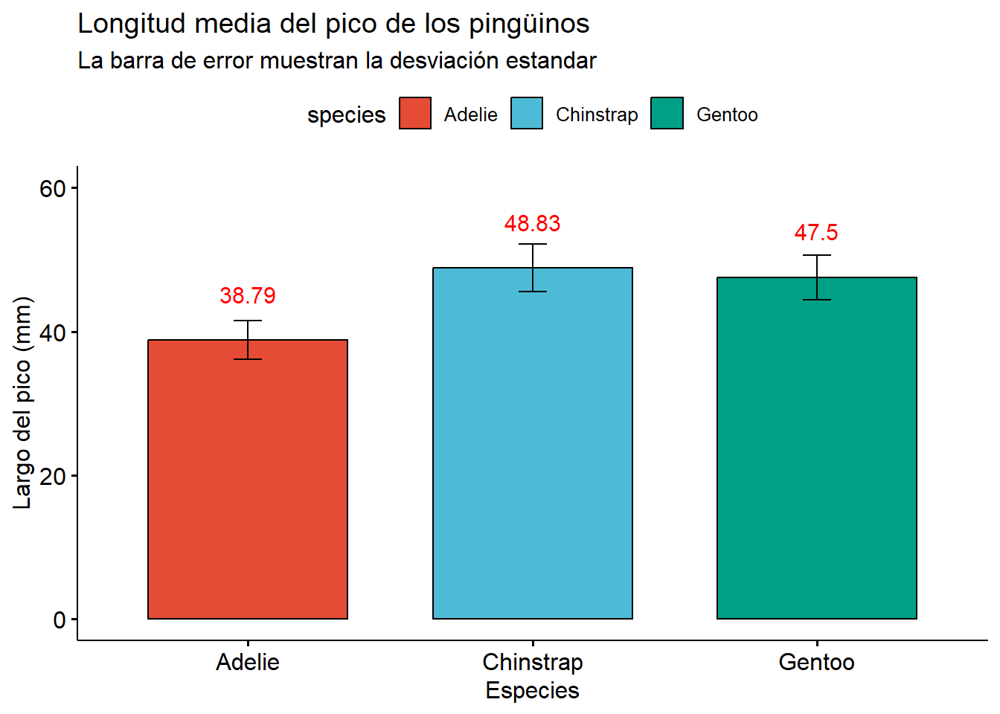
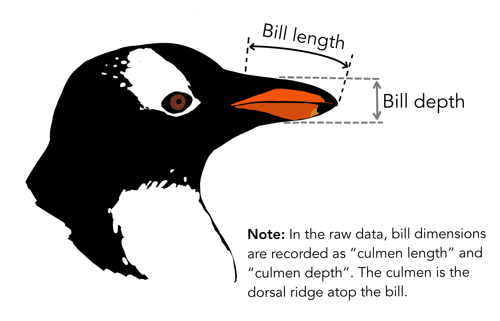
Crea un diagrama de violín o de densidad usando ggviolin() o ggdensity()
ggviolin(penguins ,
x = "species",
y = "bill_depth_mm",
title = "Profundidad promedio del pico de los pingüinos",
xlab = "Especies de pingüinos",
ylab = "Profundidad del pico (mm)",
fill = "species",
palette = "npg",
add = "boxplot",
shape = "species")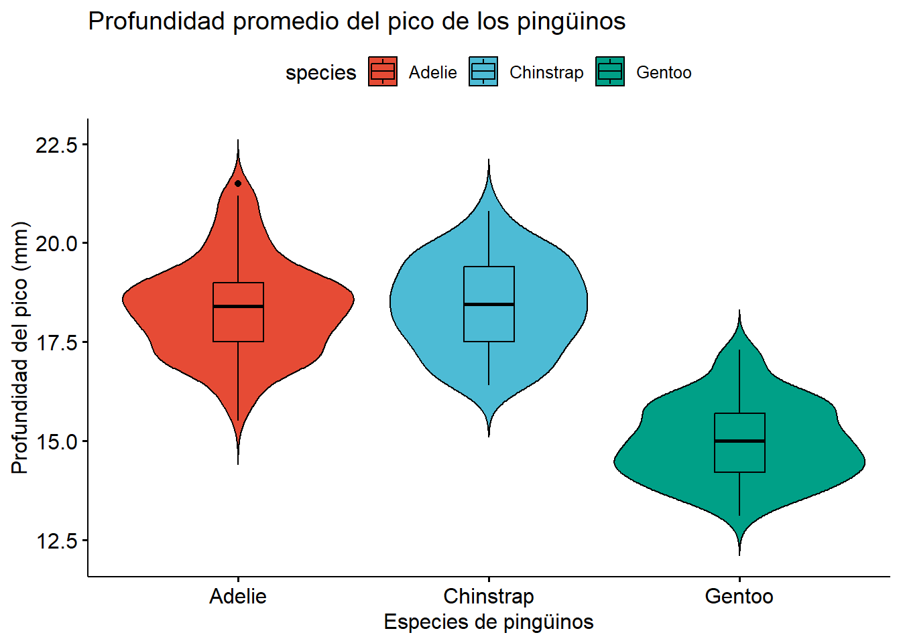
ggdensity(penguins,
x = "body_mass_g",
color = "species",
rug = TRUE,
fill = "species",
add = "mean",
title = "Masa corporal promedio de los pingüinos",
xlab = "Masa corporal (g)",
palette = "lancet")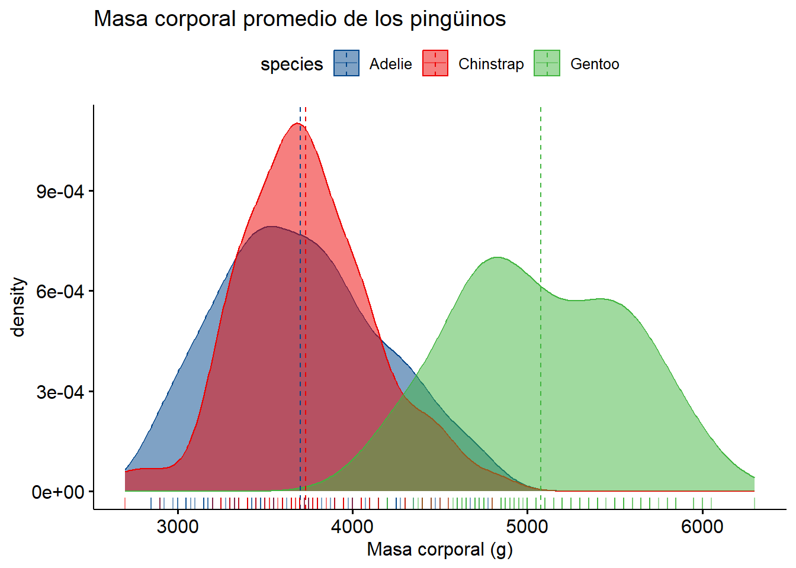
ggpubr
Usando la función ggexport() se pueden guardar las gráficas
ggexport(filename = "my_plot.png", width = 800, height = 600, res = 150)El análisis de varianza (ANOVA) es una prueba estadística utilizada para comparar las medias de tres o más grupos. Analiza la varianza dentro y entre grupos para determinar si las diferencias entre las medias son significativas. La prueba T se usa entre dos grupos.
El famoso valor p, también conocido como valor de probabilidad, es un número que indica la probabilidad de obtener los resultados observados o más extremos que los observados, si la hipótesis nula fuera verdadera. En otras palabras, representa la evidencia en contra de la hipótesis nula.
Valor p bajo (inferior a 0.05):
Indica que los resultados son estadísticamente significativos, es decir, es poco probable que se deban al azar si la hipótesis nula fuera cierta. Se suele rechazar la hipótesis nula cuando el valor p es menor que 0.05.
Valor p alto (superior a 0.05):
Indica que no hay evidencia suficiente para rechazar la hipótesis nula, es decir, los resultados podrían deberse al azar.
los asteriscos indican el nivel de significancia estadística. Normalmente, un asterisco * indica significancia al nivel de 0.05 (95%), dos asteriscos ** al nivel de 0.01 (99%), y tres *** al nivel de 0.001 (99.9%). Esto significa que existe una alta probabilidad de que la relación observada en la muestra sea también verdadera en la población general.
comparar <- list(c("Adelie", "Chinstrap"), c("Adelie", "Gentoo"), c("Chinstrap", "Gentoo"))
ggboxplot(penguins ,
x = "species",
y = "bill_depth_mm",
title = "Profundidad promedio del pico de los pingüinos",
xlab = "Especies de pingüinos",
ylab = "Profundidad del pico (mm)",
color = "species",
palette = "npg",
add = "jitter",
shape = "species") +
stat_compare_means(method = "anova", label.y = 25) + #anova test
stat_compare_means(comparisons = comparar, method = "t.test") # post hoc test using t-test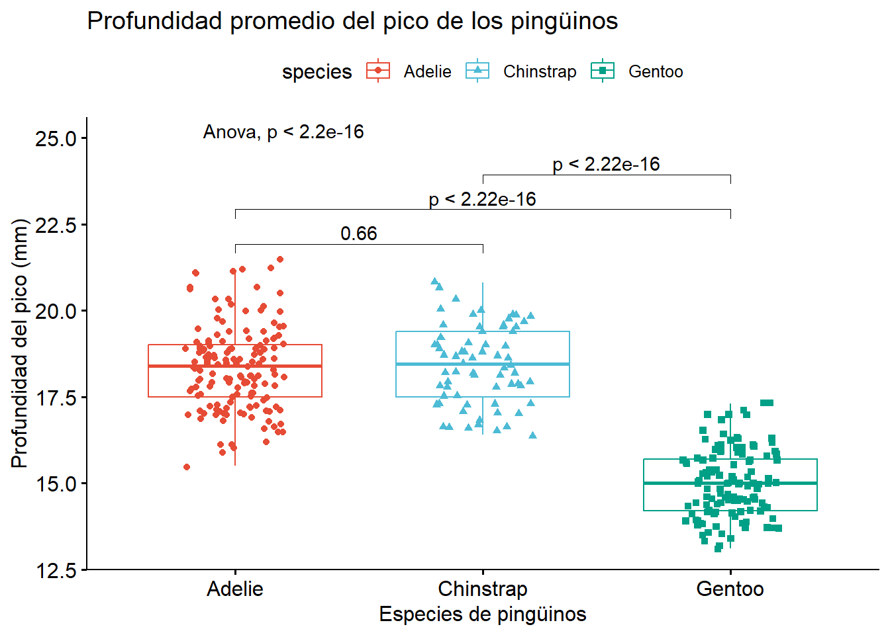
Primero veremos como podemos explorar los datos usando gráficas con ggplot
En ggplot podemos agregar cada caracteristica que deseemos a la gráfica usando + todo los detalles y opciones se pueden encontrar en: referencia del paquete ggplot2.
#Invocamos la función ggplot() con los datos a usar
# aes()determina que valor cumple cada variable en el data set
ggplot(penguins, aes(x = sex, fill = species)) +
geom_bar(alpha = 0.8) +
#Elige el tema minimal
theme_minimal() +
# Con facet se agrupan las tres gráficas
facet_wrap(~species, ncol = 1) +
# Se voltean los histogramas para ser verticales
coord_flip()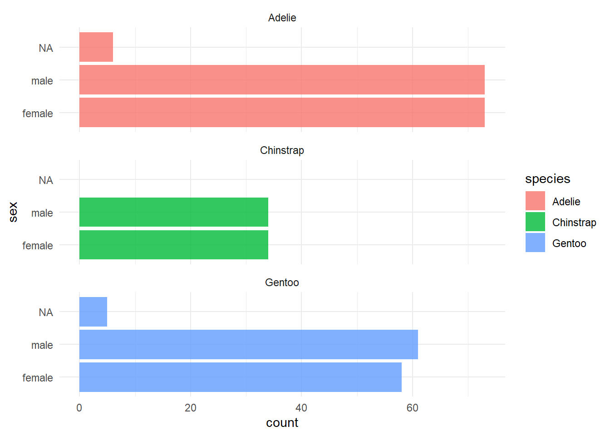
La correlación entre los datos se puede ver por cada par de variables, lo más común con varias varibles es graficar como se correlaciona cada par, el coeficiente varia de -1 hasta 1, * significa un valor de p menor a 0.05, ** es un valor de p 0.1
#El paquete GGally nos permite hacer automaticamente un diagrama de
# dispersión y densidad "kernel" por cada par de variables
library(GGally)
penguins %>%
select(species, body_mass_g, ends_with("_mm")) %>%
GGally::ggpairs(aes(color = species)) +
scale_colour_manual(values = c("darkorange","purple","cyan4")) +
scale_fill_manual(values = c("darkorange","purple","cyan4"))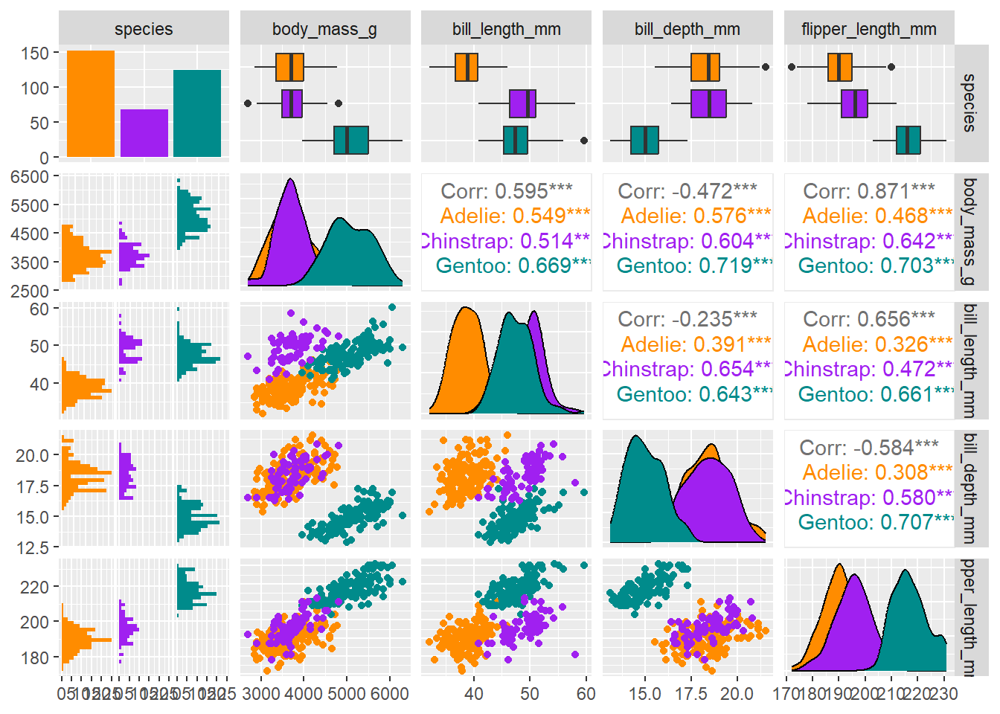
Los modelos lineales nos permiten crear un modelo que usando la correlación entre las variables nos permite clasificar o predecir una variable con respecto a la otra u otras
# Hacemos una gráfica que muestra la profundidad del pico y el largo
# Graficamos las lineas del modelo lineal para cada especie
ggplot(penguins, aes(x = bill_depth_mm, y = bill_length_mm, color = species)) +
# Gráfica de dispersión
geom_point() +
# Podemos hacer una elipse para cada especie y mostrar como encajan los datos
#stat_ellipse(type = "norm")+
# Lineas del modelo lineal
geom_smooth(method = "lm", se = FALSE) +
# Seleccionamos la escala de colores para que cuadre
scale_colour_manual(values = c("darkorange","purple","cyan4")) +
#Le damos un título
ggtitle(substitute(paste("Medidas del pico por especie del género ", italic("Pygoscelis"))))+
# Cambiamos los nombres de los ejes
xlab("Profundidad del pico (mm)")+
ylab("Largo del pico (mm)") +
labs("Especies")+
# Ajustamos el título y cambiamos la leyenda cursiva
theme(plot.title = element_text(vjust = 0, hjust = 0.5),legend.text = element_text(face = "italic"))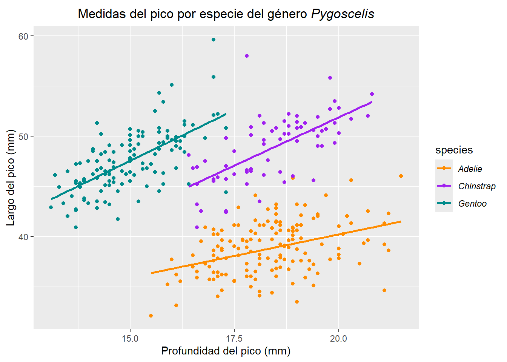
# Ahora haremos un moedlo lineal para ver como el largo afecta la profundidad
modelo1 <- lm(bill_length_mm ~ bill_depth_mm, data = penguins)
summary(modelo1)
Call:
lm(formula = bill_length_mm ~ bill_depth_mm, data = penguins)
Residuals:
Min 1Q Median 3Q Max
-12.8949 -3.9042 -0.3772 3.6800 15.5798
Coefficients:
Estimate Std. Error t value Pr(>|t|)
(Intercept) 55.0674 2.5160 21.887 < 2e-16 ***
bill_depth_mm -0.6498 0.1457 -4.459 1.12e-05 ***
---
Signif. codes: 0 '***' 0.001 '**' 0.01 '*' 0.05 '.' 0.1 ' ' 1
Residual standard error: 5.314 on 340 degrees of freedom
(2 observations deleted due to missingness)
Multiple R-squared: 0.05525, Adjusted R-squared: 0.05247
F-statistic: 19.88 on 1 and 340 DF, p-value: 1.12e-05# Haremos un nuevo modelo usando tmabién las especies
modelo2 <- lm(bill_length_mm ~ bill_depth_mm + species,
data = penguins)
summary(modelo2)
Call:
lm(formula = bill_length_mm ~ bill_depth_mm + species, data = penguins)
Residuals:
Min 1Q Median 3Q Max
-8.0300 -1.5828 0.0733 1.6925 10.0313
Coefficients:
Estimate Std. Error t value Pr(>|t|)
(Intercept) 13.2164 2.2475 5.88 9.83e-09 ***
bill_depth_mm 1.3940 0.1220 11.43 < 2e-16 ***
speciesChinstrap 9.9390 0.3678 27.02 < 2e-16 ***
speciesGentoo 13.4033 0.5118 26.19 < 2e-16 ***
---
Signif. codes: 0 '***' 0.001 '**' 0.01 '*' 0.05 '.' 0.1 ' ' 1
Residual standard error: 2.518 on 338 degrees of freedom
(2 observations deleted due to missingness)
Multiple R-squared: 0.7892, Adjusted R-squared: 0.7874
F-statistic: 421.9 on 3 and 338 DF, p-value: < 2.2e-16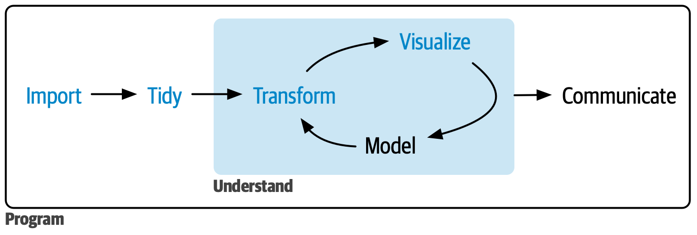
(Tomado de R for Data Science)
La estadística descriptiva es la base para entender cualquier conjunto de datos y así saber qué análisis realizar y como interpretar estos datos. Aquí se explican las medidas más importantes, primero las medidas univariadas.
La media aritmética, o simplemente la media, es el promedio de un conjunto de datos. Es la suma de todos los valores dividida por el número total de observaciones. Es muy sensible a valores extremos (outliers), lo que la hace útil para datos distribuidos simétricamente.
\[ \bar{x} = \frac{1}{n} \sum_{i=1}^{n} x_i \]
Donde:
La mediana es el valor central en un conjunto de datos cuando estos están ordenados de menor a mayor. Si hay un número impar de observaciones, la mediana es el valor en la posición central. Si hay un número par, es el promedio de los dos valores centrales. La mediana es menos sensible a los valores extremos que la media, lo que la hace una medida robusta para datos asimétricos.
Cómo calcularla:
Se ordenan todos los datos de forma ascendente o descendente.
Si \(n\) es impar, la mediana es el valor en la posición \((n+1)/2\).
Si \(n\) es par, la mediana es el promedio de los valores en las posiciones \(n/2 y (n/2)+1\).
La moda es el valor que aparece con mayor frecuencia en un conjunto de datos. Un conjunto de datos puede tener una moda (unimodal), dos modas (bimodal), o más (multimodal), o incluso ninguna moda si todos los valores son únicos.
El rango es la diferencia entre el valor máximo y el valor mínimo en un conjunto de datos. Es una medida simple de la dispersión, pero muy susceptible a los valores extremos.
\[R = X_{máx} - X_{mín}\]
Donde:
\(X_{máx}\) es el valor máximo en el conjunto de datos.
\(X_{mín}\) es el valor mínimo en el conjunto de datos.
###Varianza (\(s^2\) o \(σ^2\))
La varianza mide la dispersión promedio de cada punto de datos con respecto a la media. Cuanto mayor sea la varianza, más dispersos estarán los datos.
Para una muestra (varianza muestral):
\[s^2 = \frac{\sum_{i=1}^{n} (x_i - \bar{x})^2}{n-1}\]
Para una población (varianza poblacional):
\[\sigma^2 = \frac{\sum_{i=1}^{N} (x_i - \mu)^2}{N}\]
Donde:
\(s^2\) es la varianza muestral.
\(σ^2\) es la varianza poblacional.
\(x_i\) es cada valor individual.
\(\bar{x}\) es la media muestral.
\(\mu\) es la media poblacional.
\(n\) es el número de observaciones en la muestra.
\(N\) es el número de observaciones en la población.
La desviación estándar es la raíz cuadrada de la varianza. Es una medida de dispersión más interpretable que la varianza, ya que está en las mismas unidades que los datos originales. Nos dice la dispersión típica de los datos alrededor de la media.
Para una muestra (desviación estándar muestral): \[s = \sqrt{s^2} = \sqrt{\frac{\sum_{i=1}^{n} (x_i - \bar{x})^2}{n-1}}\]
Para una población (desviación estándar poblacional): \[\sigma = \sqrt{\sigma^2} = \sqrt{\frac{\sum_{i=1}^{N} (x_i - \mu)^2}{N}}\]
Estas medidas nos ayudan a entender la relación entre dos o más variables.
La correlación mide la fuerza y la dirección de una relación lineal entre dos variables numéricas. El coeficiente de correlación de Pearson (r) varía entre -1 y +1.
Un valor cercano a +1 indica una fuerte correlación positiva (a medida que una variable aumenta, la otra también lo hace).
Un valor cercano a -1 indica una fuerte correlación negativa (a medida que una variable aumenta, la otra disminuye).
Un valor cercano a 0 indica poca o ninguna correlación lineal.
\[r = \frac{n \sum(x_i y_i) - (\sum x_i)(\sum y_i)}{\sqrt{[n \sum x_i^2 - (\sum x_i)^2][n \sum y_i^2 - (\sum y_i)^2]}}\]
Donde:
\(n\) es el número de pares de datos.
\(x_i\) e \(y_i\) son los valores individuales de las dos variables.
\(\sum{x_i y_i}\) es la suma de los productos de cada par de valores.
\(\sum{x_i}\), \(\sum{y_i}\), \(\sum{x_i^2}\), \(\sum{y_i^2}\) son las sumas de los valores y los cuadrados de los valores, respectivamente.
En paleontología, raramente trabajamos con una sola variable. Los organismos son complejos, los ecosistemas interactúan, y los datos que recolectamos son inherentemente multivariados. La estadística descriptiva multivariada nos permite explorar relaciones y patrones en conjuntos de datos con múltiples variables simultáneamente.
El Análisis de Componentes Principales (PCA por sus siglas en inglés: Principal Component Analysis) es una técnica de reducción de dimensionalidad. Su objetivo es transformar un conjunto de variables posiblemente correlacionadas en un nuevo conjunto de variables no correlacionadas llamadas componentes principales. Los primeros componentes principales capturan la mayor parte de la varianza total en los datos, permitiéndonos visualizar y entender la estructura subyacente en conjuntos de datos complejos con muchas variables.
Aplicación en Paleontología: Se usa comúnmente para analizar datos morfométricos (por ejemplo, muchas medidas de un cráneo o partes del poscráneo) para identificar las principales direcciones de variación morfológica y agrupar especímenes con formas similares.
El Análisis de Correspondencias Simples (CA por sus siglas en inglés: Correspondence Analysis) es una técnica exploratoria utilizada para visualizar la relación entre las filas y las columnas de una tabla de contingencia (frecuencias o proporciones). Permite detectar asociaciones entre categorías de variables cualitativas y representarlas gráficamente en un espacio de baja dimensionalidad.
Aplicación en Paleontología: Útil para analizar la asociación entre diferentes taxones fósiles y los tipos de sedimento donde se encuentran, o entre la presencia de ciertas especies y las condiciones paleoambientales inferidas.
El Análisis de Correspondencias Múltiples (MCA por sus siglas en inglés: Multiple Correspondence Analysis) es una extensión del CA que permite analizar las relaciones entre más de dos variables cualitativas. Es útil cuando tenemos múltiples variables categóricas y queremos explorar cómo se asocian entre sí y cómo los individuos (o especímenes) se agrupan en función de estas categorías.
Aplicación en Paleontología: Podría usarse para analizar la distribución de múltiples características de un fósil (tipo de dentición, forma de las extremidades, tipo de dieta inferida) a través de diferentes grupos taxonómicos o estratos geológicos.
Los métodos de clasificación (también conocidos como clustering o análisis de agrupamiento) son técnicas utilizadas para agrupar objetos o individuos en clases o grupos, de manera que los objetos dentro de un mismo grupo son más similares entre sí que a los objetos en otros grupos. No requieren información previa sobre la pertenencia a un grupo, lo que los convierte en métodos “no supervisados”.
Existen varios algoritmos, como:
Clustering jerárquico: Crea una jerarquía de clústeres, que se puede visualizar en un dendrograma.
K-means: Agrupa los datos en un número predefinido de clústeres (\(k\)).
Aplicación en Paleontología: Indispensable para la taxonomía numérica, donde se agrupan especímenes fósiles basándose en múltiples características morfológicas para identificar posibles nuevas especies o variedades. También se usa para agrupar localidades fósiles con composiciones faunísticas o florísticas similares, lo que puede indicar paleoambientes o paleocomunidades específicas.